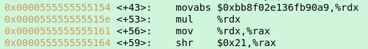

Reciprocal Multiplication
Binary Fractions
Since division is expensive, a different process of reciprocal multiplication is preformd.
The compiler precalculates a value to multiply by.
The following line of code (MulDivExample.c) preforms division:

Yet it is translated by the compiler to:
